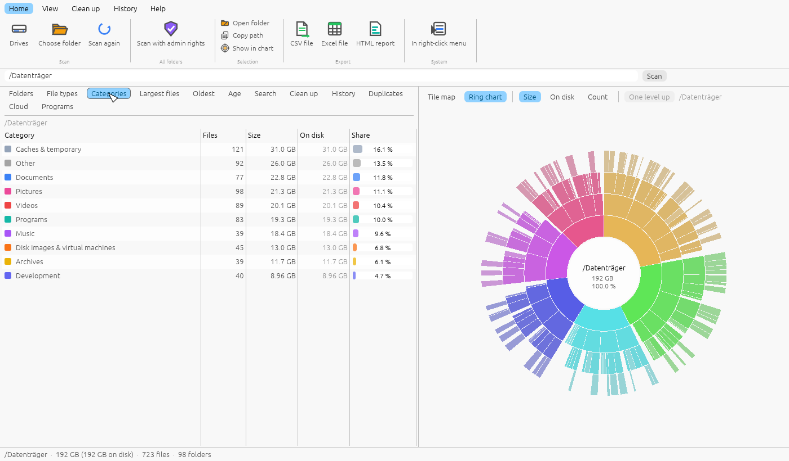

Where did the disk space go?
MrSizeMe shows in seconds which folders and files fill your storage – and helps you clean up safely. For Windows, macOS and Linux, free and open source.
Download for freeWindows (installer or portable) · macOS (.dmg) · Linux

Features
Fast scan, every folder
Several threads; on Windows optionally with admin rights straight from the NTFS table. The window itself never runs with raised rights.
Many views
Folder tree, tile map, ring chart, file types, categories, largest and oldest files, age distribution, search with filters.
Clean-up help with traffic light
About 40 well-known big folders (WinSxS, caches, iPhone backups, node_modules …) with the safe way to clean up. Recycle bin only, never deleted for good.
Ask an AI – if you want
Google AI mode, a local AI (Ollama), Gemini or Claude with your own key. You see exactly what is sent first: only the folder name and size.
History and forecast
“Since last week, Downloads has grown by 12 GB.” – “At this pace the disk will be full in about 2 months.” Plus a warning when space runs low.
Live update
After the scan, the numbers follow changes on the disk – without a new scan.
Duplicates, cloud, programs
Duplicate files by checksum, OneDrive/iCloud “keep only online”, space per program including its data and caches.
Move assistant
Large folders to another disk: copy and check first, then remove the original – with a link at the old place if you like.
Export and command line
CSV, Excel, HTML report and JSON. Plus “Show with MrSizeMe” in the right-click menu – only if you switch it on.
Privacy and safety
- Only names, sizes and dates are read – file contents only by the duplicate search you start yourself, and only on your computer.
- The program only goes online when you ask the AI or (with your permission) look for updates. “Fully offline” blocks all of it.
- Updates are signed. A file with a wrong signature is not installed.
- Nothing is deleted for good without a question; system and user folders are protected.
Download
| System | File |
|---|---|
| Windows 10/11 | Installer …-windows-x64-setup.exe or portable …-windows-x64-portable.zip |
| macOS 11 or newer | …-macos.dmg (Apple silicon and Intel). First start: right-click MrSizeMe → “Open”. |
| Linux | …-linux-x86_64.tar.gz |
Every file has a SHA-256 checksum (SHA256SUMS.txt) and a minisign signature (.minisig).